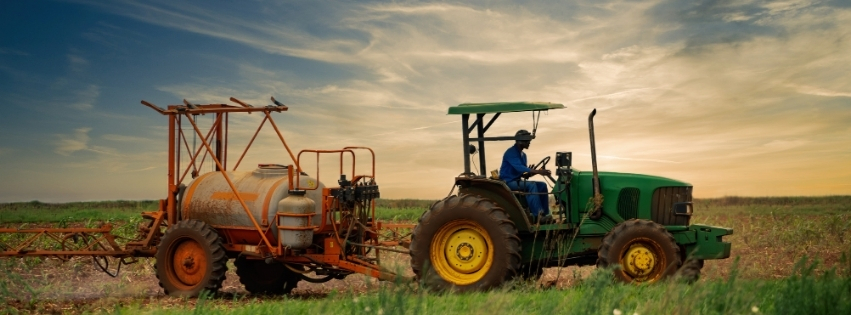

FOUNDATIONAL PILLAR
Good Governance & Accountability
Promoting civic education, transparency, responsive leadership, public participation, and community-led accountability.
Our core pillars, strategic focus areas, and community objectives

Good governance and accountability form the foundation of Eagle Eco-Vision’s work. The other three focus areas translate accountable leadership and meaningful community participation into practical, lasting development outcomes.
Promoting civic education, transparency, responsive leadership, public participation, and community-led accountability.

Mobilizing communities, especially young people, to protect natural resources and adopt sustainable environmental practices.

Promoting equitable access to learning opportunities through educational support, mentorship, and initiatives that help learners overcome barriers.

Building the capacity of grassroots communities through youth leadership, skills development, inclusive participation, and locally led solutions.